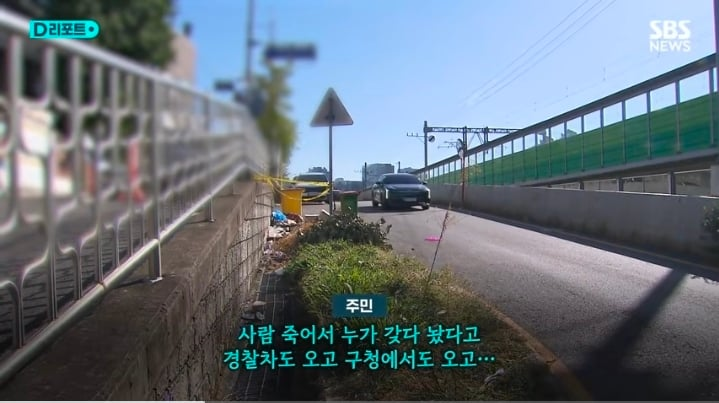
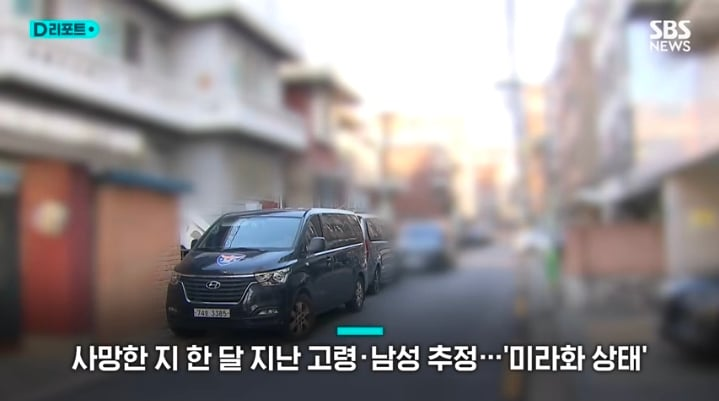
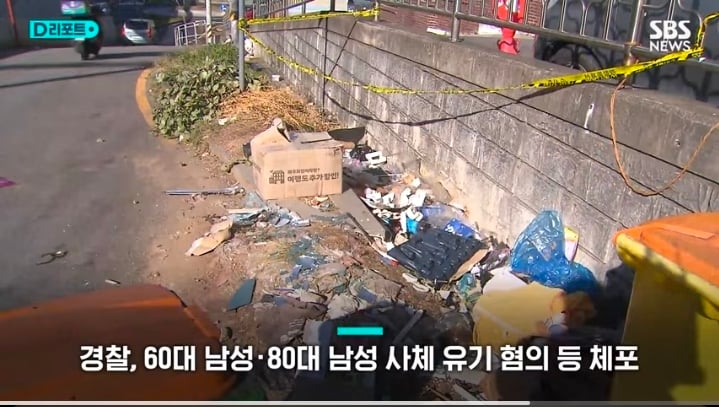

다행히 범인들 바로 잡힘



다행히 범인들 바로 잡힘
범인들?
어떻게 저기에 유기할 생각을 하지..?
뇌가 생각하기를 멈춘거지
어디지
아니 죽여서 버린게 아니고 그냥버린거....??????????
거기에 범인 한명은 죽은 사람 집주인이었다는데
고독사 시신을 그냥 치운거네...
머선일인데
한달동안 쓰레기장에 방치된거야?
사체 유기하는데 주택가 쓰레기더미에 하는 건 지능문제지?
계획 살인이 아니었다는거지 뭐
우발적이니까 저런 판단하는거고
그냥 고독사했는데 처리 어디할지몰라서 쓰레기장에 버린건가?
경찰에 전화가 기본아니였어??
나이대 보니 그럴 생각할 상황이 아니었던거 같긴 한데...
미라화?